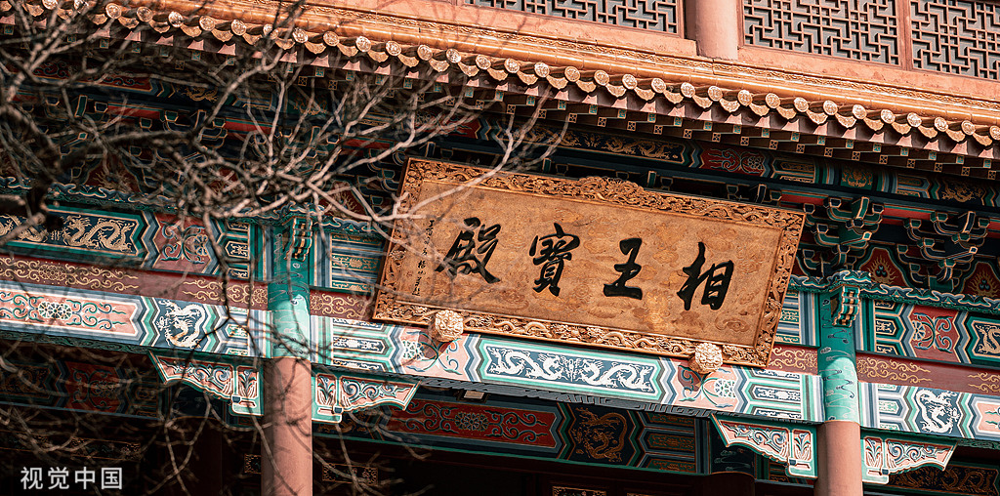
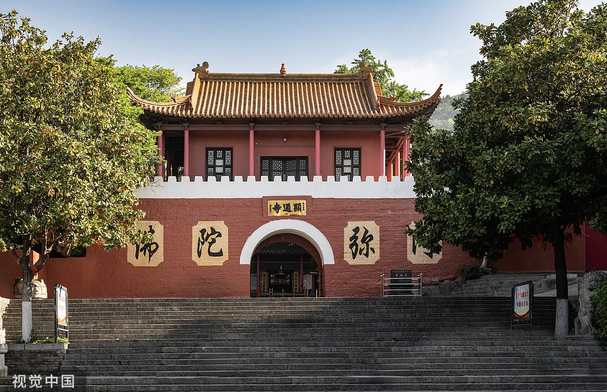
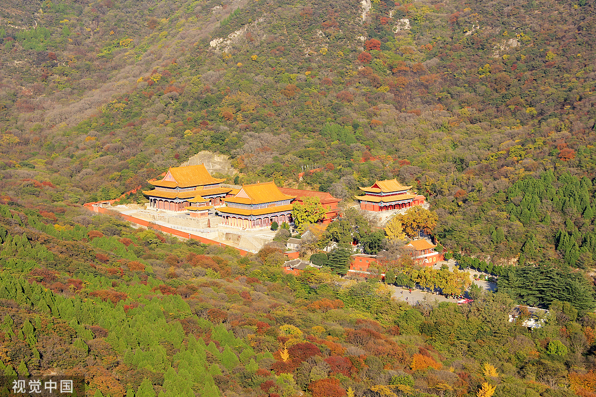
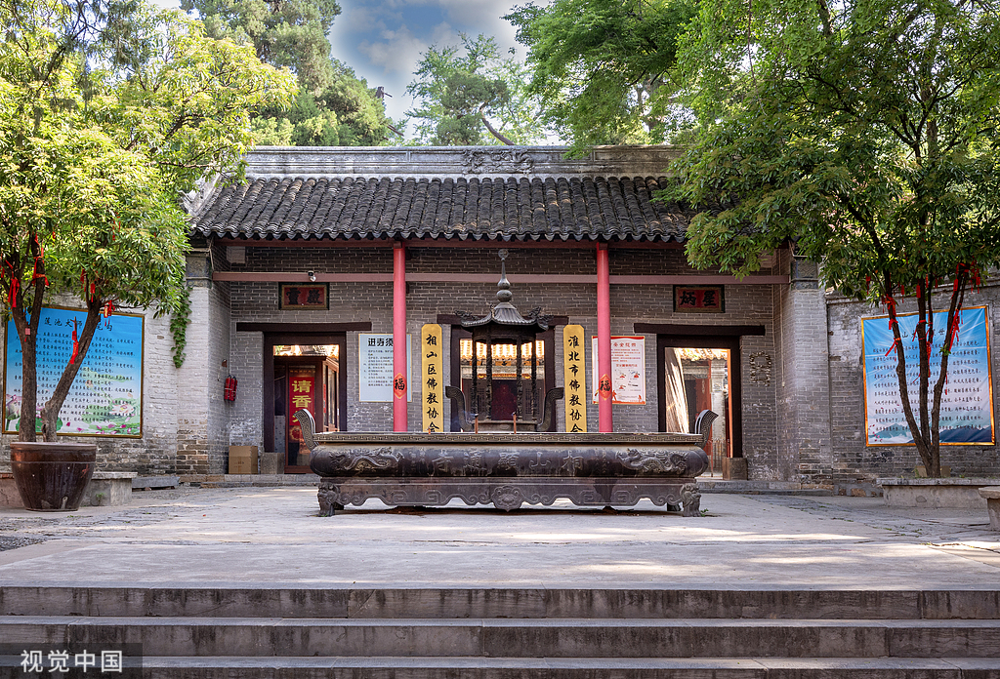

景点介绍
相山公园位于淮北市相山区，是淮北市最大的综合性公园，占地面积约100公顷。公园内山清水秀，景色宜人，是淮北市民休闲娱乐的重要场所。
显通寺是相山公园内的核心景点，始建于晋朝，原名相山寺，后改名为显通寺。寺庙依山而建，占地面积约3000平方米，是淮北市重要的佛教活动场所。显通寺建筑群包括大雄宝殿、天王殿、藏经楼等建筑，具有典型的中国传统寺庙建筑风格。
显通寺历史悠久，文化底蕴深厚，寺内保存有许多珍贵的历史文物和佛教艺术品。每年农历正月初一、十五等重要节日，寺庙都会举办盛大的佛事活动，吸引众多信徒和游客前来参观。
除了显通寺，相山公园内还有其他景点，如相山天池、动物园、儿童乐园等，适合不同年龄段的游客前来游玩。公园内的植被丰富，四季景色各异，春天百花齐放，夏天绿树成荫，秋天层林尽染，冬天银装素裹，是淮北市的一张生态名片。

大雄宝殿
大雄宝殿是显通寺的主殿，始建于晋朝，历经多次修缮，至今保存完好。殿内供奉着释迦牟尼佛像，高约3米，栩栩如生。殿内梁枋上绘有精美的壁画，讲述着佛教故事。每年农历正月初一，这里都会举办盛大的祈福活动，吸引众多信徒前来参拜，香火旺盛。大雄宝殿不仅是显通寺的核心建筑，也是淮北市重要的佛教文化象征。

寺庙山门
显通寺山门是寺庙的入口，气势恢宏，雕梁画栋。山门上方悬挂着“显通寺”匾额，字体刚劲有力。山门前有一对石狮，造型威武，守护着寺庙。山门两侧是哼哈二将的塑像，形象生动。穿过山门，便进入了寺庙的前院，院内古木参天，环境清幽。山门不仅是寺庙的标志性建筑，也是游客拍照留念的热门地点。

相山公园景色
相山公园是淮北市最大的综合性公园，占地面积约100公顷。公园内山清水秀，景色宜人，有相山天池、动物园、儿童乐园等景点。公园内的植被丰富，四季景色各异，春天百花齐放，夏天绿树成荫，秋天层林尽染，冬天银装素裹。登上相山山顶，可以俯瞰整个淮北市区的美景，是市民休闲娱乐的好去处。

寺庙庭院
显通寺庭院古色古香，布局精巧。庭院内种满了松柏、银杏等古树，环境清幽。庭院中央有一个放生池，池内锦鲤游动，增添了生机。庭院两侧是配殿，分别供奉着观音菩萨和地藏菩萨。庭院地面由青石板铺成，整洁干净。在这里，游客可以感受到浓厚的佛教文化氛围，是修身养性的好地方。